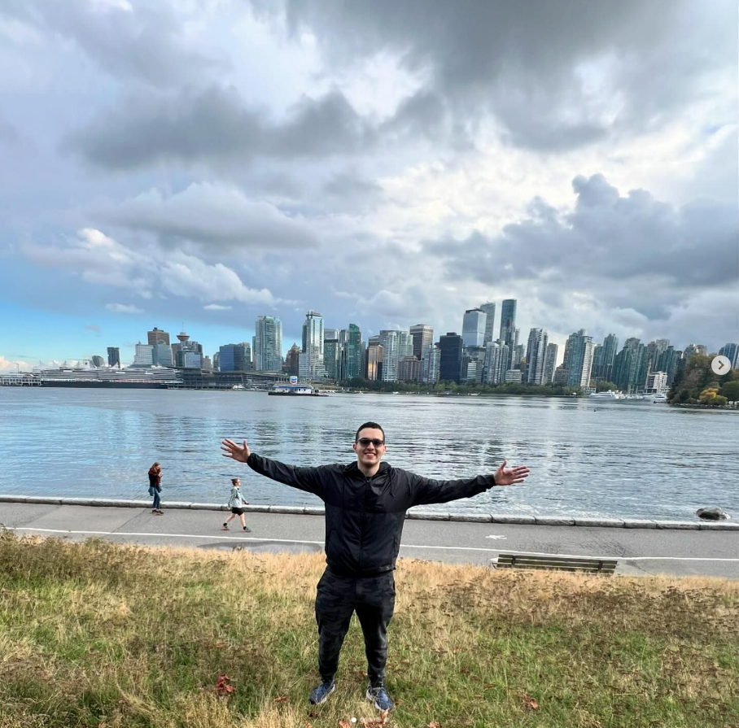

Hello, I'm Santiago. Welcome to my Cultural Connections Page!

Top Cultural Shocks in Vancouver
1. Adjusting to the constant rainy weather and early sunsets 🌧️.
2. The strong emphasis on individualism compared to my home country 🇨🇦 vs 🇨🇴.
3. Seeing many homeless people on the streets—it was quite a shock 😢.
Things I Miss Most from Colombia
1. My family ❤️—I love spending time with them. Now that I'm in Vancouver, I sometimes feel a bit lonely, but I'm trying to meet new people to share my time with 😊.
2. Colombian food 🍽️—It’s hard to find or cook authentic dishes here. I especially miss "chuleta valluna" (breaded pork cutlet), but preparing it here is quite expensive 😔.
New Things I Love About Vancouver
1. The stunning natural landscapes and parks around the city 🌲🏙️. I love being surrounded by so much beauty.
2. The multicultural environment 🌍—I’m able to meet people from all over the world, which has been an amazing experience.
My Top Personal Goal
Right now, my main goal is to excel in my cybersecurity studies 🖥️ and eventually work for a top company in this exciting field 🚀.